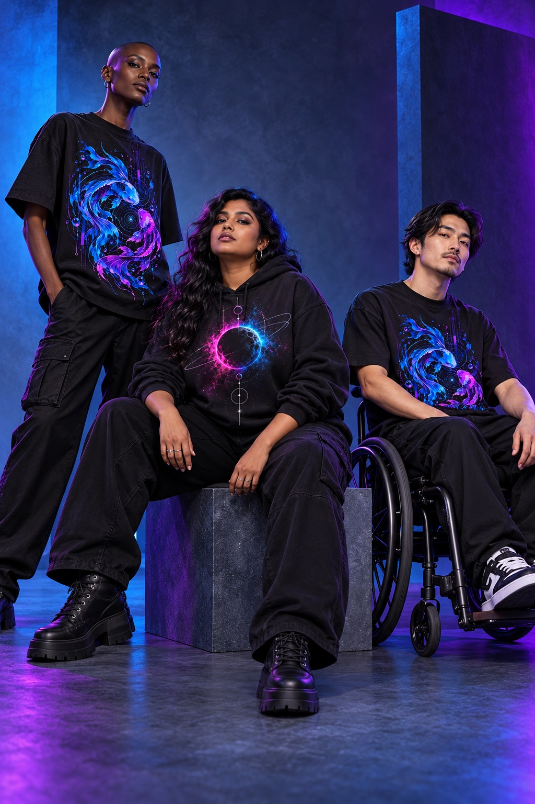
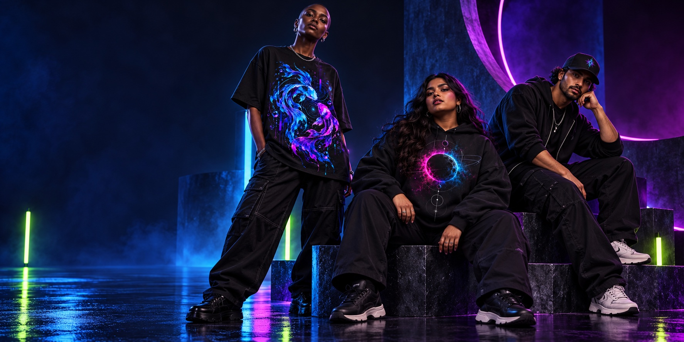
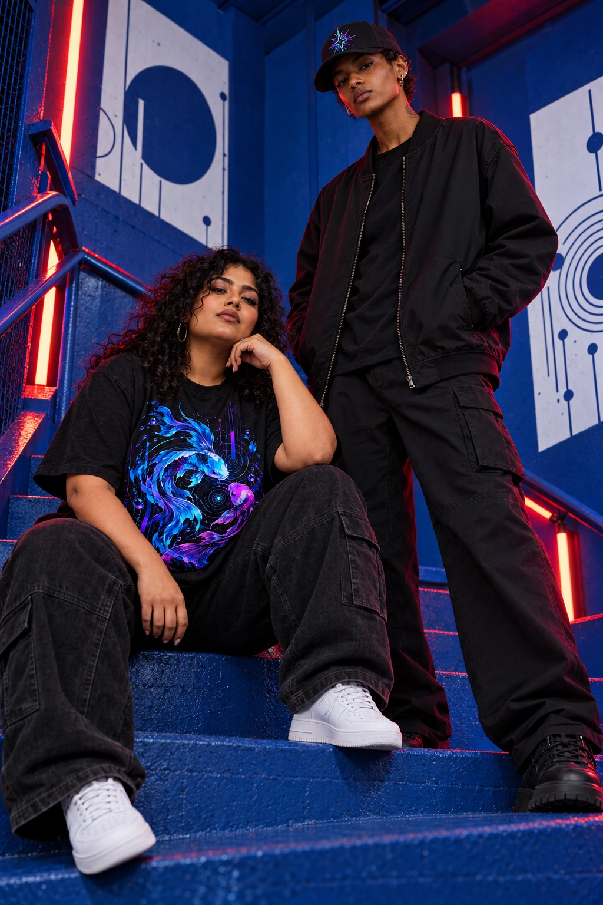
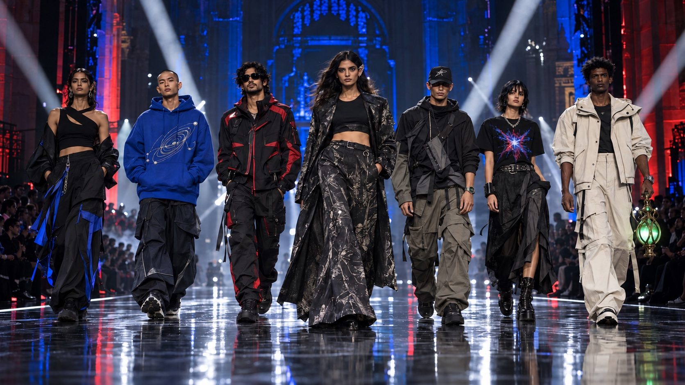

FRAME 01 / ALL IN↗CAST / MIXED SILHOUETTES
Take up your space.
Standing, seated, or somewhere in between. A garment should meet the person wearing it.
 ANYONE CAN BEA SUPERHERO
ANYONE CAN BEA SUPERHERO
AI CAMPAIGN IMAGE / ORIGINAL CONCEPT GARMENTSDifferent bodies. Different ways of showing up. The same right to wear something that feels like you.
Explore the original drop ↗Our campaign pictures are AI-generated styling concepts. They help show how the original pieces might look across a range of bodies and personal styles. They are not photographs of real customers or approved physical samples.

FRAME 01 / ALL IN↗Standing, seated, or somewhere in between. A garment should meet the person wearing it.

FRAME 02 / SCALE↗Relaxed shapes, visible details, and a fit that belongs to the wearer.
No single way to look like a hero. Make the look yours, then let the rest follow.
Follow the light as it moves across original silhouettes and details. Select a look to steer the camera.

Neon starburst artwork, framed in motion.
The runway scene and styling are AI-generated visual concepts, not a live video or approved physical samples. Watch, ear-cuff, and lantern pieces are styling directions for future original designs. Final fit, materials, and product photography come after sampling.